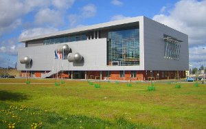

Zagrożenia rozwoju osobowości młodego
człowieka na początku XXI wieku
X OGÓLNOPOLSKA KONFERENCJA NAUKOWA
dedykowana pamięci ks. Janusza Witkowskiego
Miłości trzeba się uczyć. Zadania, skutki, prewencja
Gdańsk, 18-20 listopada 2016 r.

Miejsce konferencji:
Biblioteka Uniwersytetu Gdańskiego,
ul. Wita Stwosza 53, Gdańsk - Oliwa
Biblioteka Uniwersytetu Gdańskiego,
ul. Wita Stwosza 53, Gdańsk - Oliwa
Formularz zgłoszeniowy i Program konferencji są dostępne w odpowiednich zakładkach niniejszej strony oraz pod poniższymi linkami:
formularz zgłoszeniowy i program konferencji.